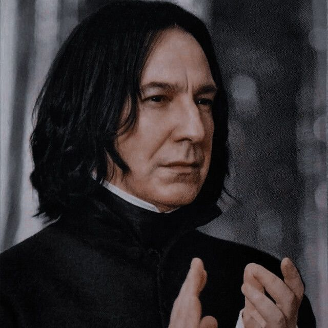

-

Harry Potter
Grifinória- Harry só descobre que é bruxo aos 11 anos, quando recebe uma carta comunicando que ele havia sido aceito em Hogwarts, uma escola de Magia e Bruxarias que ele nem sabia que existia.
-

Rony Weasley
Grifinória- Rony vem de uma família de bruxos, três dos seus irmãos estudam em Hogwarts, os gêmeos Fred e George e a caçula Gina. Seu pai é membro do Ministério da Magia. Harry sabe que ele pode contar com Rony pro que der e vier, desde explicar algo do mundo dos bruxos até ajudar a se livrar dos colegas chatos que querem saber da famosa cicatriz.
-

Hermione Granger
Grifinória- Hermione é a preferida do diretor de Harry Potter e a Pedra Filosofal, Chris Columbus. A menina só desgruda de Harry e Rony na hora de dormir. É a mais inteligente dos três, aliás, da turma inteira. Sabe tudo sobre a história de Hogwarts, dos bruxos e sempre tira as melhores notas, mesmo sendo filha de trouxas. Aliás, por causa disso, às vezes ela sofre preconceito em Hogwarts.
-

Luna Lovegood
Corvinal- Uma aluna da Corvinal que costuma sofrer bullying na escola e ser alvo de diferentes brincadeiras por causa de seu jeito peculiar. Luna tem um jeito avoado, como se estivesse sempre pensando em outras coisas. Calma e despreocupada com o que pensam dela, sempre veste roupas extravagantes e faz comentários inesperados.
-

Severus Snape
Professor de poções-Snape é um dos professores de Hogwarts. Amargo, sempre sério, pegando no pé de todos os estudantes e sempre tentando proteger os alunos de sua própria casa, ele não é exatamente querido por todos. Mas com Harry a antipatia foi ainda maior. Desde a primeira aula com Potter, Snape deixou bem claro que sentia uma misteriosa raiva por ele.
-

Albus Dumbledore
Diretor da Escola- O diretor de Hogwarts é um dos bruxos mais respeitados no mundo. Já foi até convidado para ser ministro da magia, mas preferiu continuar na escola. Tem uma longa barba branca, uma sala cheia de segredos e é muito bondoso com os alunos. Sua aparência lembra muito o Druida Panoramix, das histórias do gaulês Asterix. Dumbledore sempre teve um carinho especial por Harry, que o admira muito.
-
Lord Voldemort
Tom Riddle Vilão-Por todas as atrocidades que cometeu durante a Primeira Guerra Bruxa, Voldemort era constantemente chamado apenas como "Você-Sabe-Quem", dado o pavor que as pessoas tinham em apenas pronunciar seu nome.